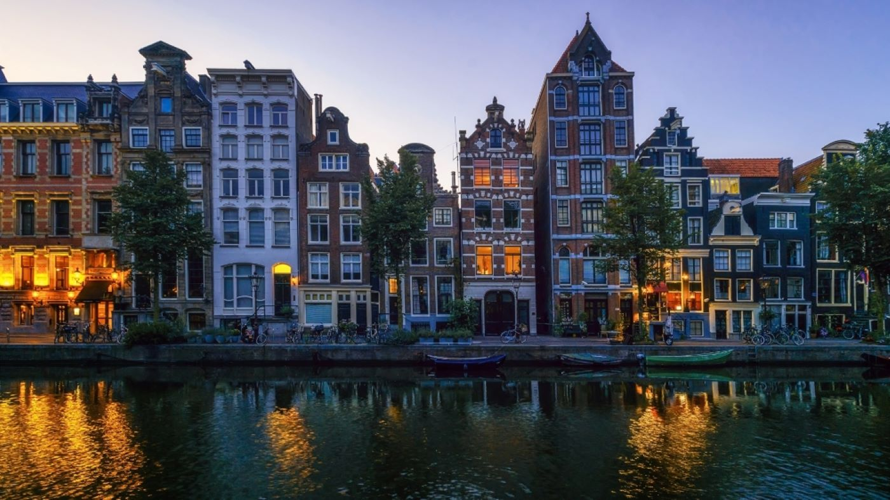

<HTML>
<HEAD>
<TITLE>HELLO WORLD</TITLE>
</HEAD>
<BODY
URBANISTICS 
</BODY>
</HTML>
<H1 ALIGN="CENTER">Что такое урбанистика и зачем она нужна</H1>
<FONT COLOR="Black"
ALIGN="CENTER">Preface:</H1>
<H2> </FONT>
<P ALIGN="LEFT">Урбанистика — это наука, изучающая развитие городских сообществ и систем. Она аккумулирует достижения гуманитарных, социальных и технических наук для того, чтобы развивать города, делать их комфортнее и удобнее для жизни.
<P ALIGN="RIGHT">В отличие от архитектора или градостроителя урбанист не проектирует новые здания и кварталы, а улучшает уже существующие. Впрочем, грань между урбанистикой и градостроительством довольно условна.

<HTML>
<HEAD>
<TITLE>Что такое урбанистика и зачем она нужна</TITLE>
</HEAD>
Современные города — сложные саморазвивающиеся системы. Для того чтобы объяснить городские процессы и подчинить их развитие интересам человека, появилась новая наука — урбанистика. Расскажу, как она возникла, чем занимается и как меняет нашу жизнь
<P ALIGN="CENTER">
[<A HREF="Teach.htm">Что такое урбанистика и где ей учат</A>]
[<A HREF="History.htm">История урбанистики</A>] 
[<A HREF="Principles.htm">Принципы</A>] 
[<A HREF="Useful.htm">Чем полезна урбанистика</A>]  
[<A HREF="Examples.htm">Примеры урбанистических проектов</A>]